Much of this lecture is coming from De Mesquita and Fowler (2021) Chapters 2 and 3 and Causal Inference in R Chapter 1.
Correlation and causation
“Correlation does not imply correlation” - Why?
See thousands of these spurious correlations here.
What is correlation?
Correlation
The extent to which two features of the world tend to occur together (paraphrased from De Mesquita and Fowler (2021)).
How would you describe the following correlations?
Here is the relationship between a discrete variable (Ice Cream Bars Sold) and a continuous variable (Temperature in Fahrenheit)
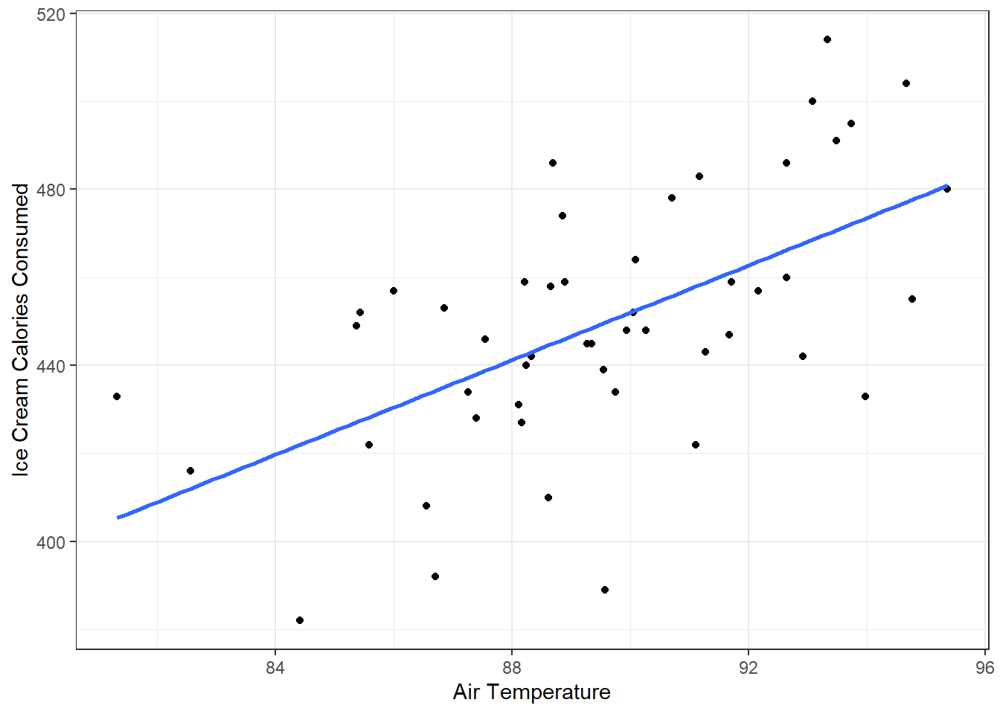
And next between a binary (something coercable or representable as 1 or 0) variable (Target gene activated) and a continuous variable (Telomerase activity)
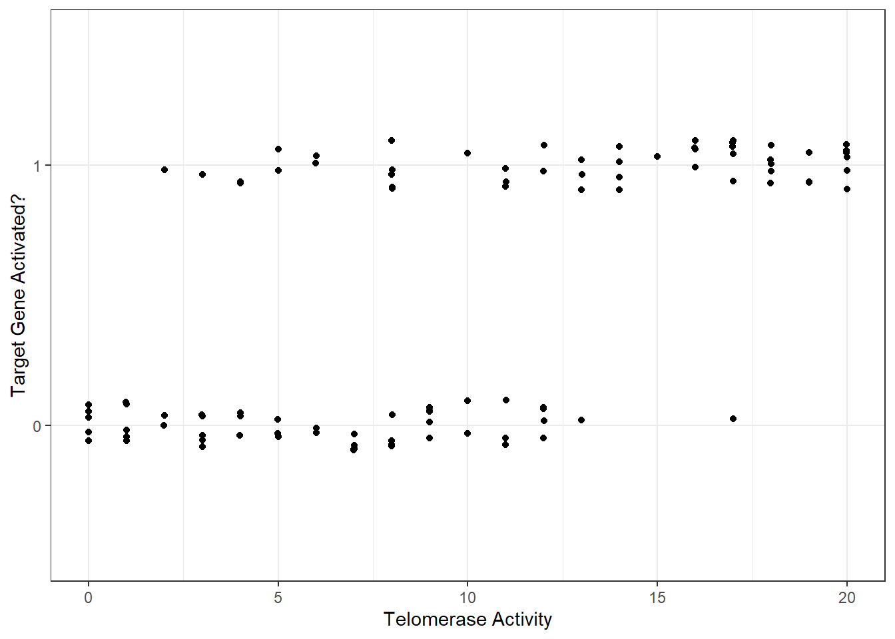
And the relationship of two binary variables - whether a person was in a treatment group or control group and whether that person was sick or not.
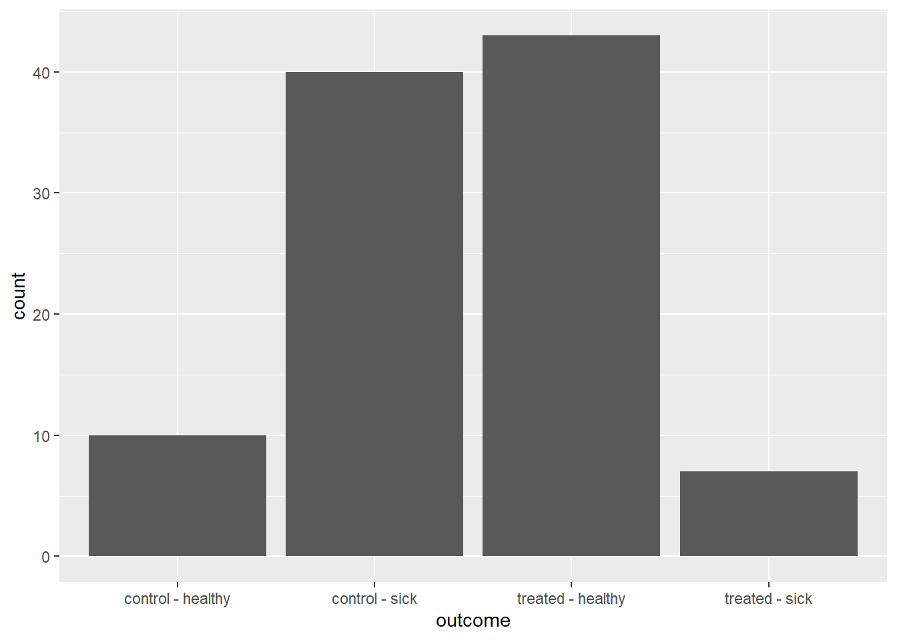
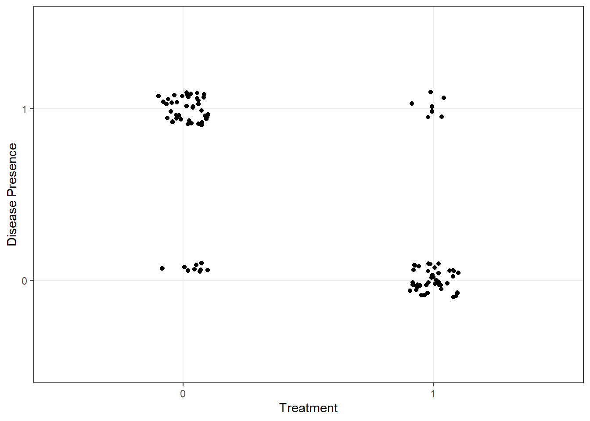
Treatment
Disease (prop.)
0
0.80
1
0.14
Does knowing a correlation exists help you predict cases you didn’t measure?
What is a correlation useful for?
Description
Describing your sample may help you describe and understand the real world
It may help to know that as temperature increases, more ice cream is sold
Stronger assumptions are needed to move beyond description
Prediction (Forecasting)
Assumptions:
The correlation is not just due to chance - statistical inference problem
The correlation in your sample is representative of the population you’re interested in forecasting - extrapolation requires extra care
Causal Inference
Philosophical and statistical issue: Must rule out other correlations and use theoretical assumptions
We’ll talk more about actually measuring correlations in the next lecture.
What is causation?
Causal effect
change in some feature that would result from a change in some other feature
would result is critical here. The definition (from Oxford Languages and Google) for would “expresses the conditional mood, indicating the consequence of an imagined event.”
“Human bodies operate at an ideal energetic frequency, but everyday stresses and anxiety can throw off our internal balance, depleting our energy reserves and weakening our immune systems. Body Vibes stickers come pre-programmed to an ideal frequency, allowing them to target imbalances. While you’re wearing them close to your heart, on your left shoulder or arm they’ll fill in the deciencies in your reserves, creating a calming effect, smoothing out both physical tension and anxiety. The founders, both aestheticians, also say they help clear skin by reducing inflammation and boosting cell turnover.”
How can we test the causal implication of the claim that Body Vibes clear skin?
In an alternative world, at the exact moment you try out a Body Vibes sticker, your friend swaps out an identical sticker that has not been pre-programmed to an ideal frequency. That is, everything else is the same.
Alternative World
Interpretation
Skin clearer
Negative effect
Skin same
No effect
Skin worse
Positive effect
counterfactual
any alternative world used for comparisons against the real world
The fundamental problem of causal inference is that you only observe one world. Everyone either gets the pre-programmed sticker or they don’t (the potential outcome for the opposite treatment is counterfactual). So how can we make and evaluate causal claims?
Confounds - “unadjusted common causes” - “features of the sample and how we use it that mislead us”
Why do experiments work? Experiments that randomize DELETE the backdoor path arrows
Clear questions and goals define your statistical analyses
The structure of your data do influence what kinds of analyses you will use, but it’s the questions and goals that define how you plan your data collection and experiments, what you expect from your analyses, and how you interpret their results. This is about having a “transparent and logical plan for connecting scientific hypotheses and models to data analysis,” as Richard McElreath puts it.
There are three major goals in quantitative analysis, and you’ll notice these look a lot like the uses of a correlation above, and that’s for good reason.
Description
Description is about describing the distribution of variables, sometimes stratified by other variables. Like relationships of bill lengths and body weight stratified by penguin. You have the tools to do a lot of this graphically.
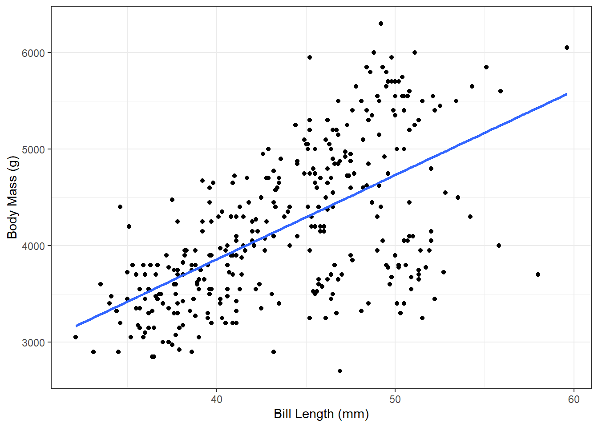
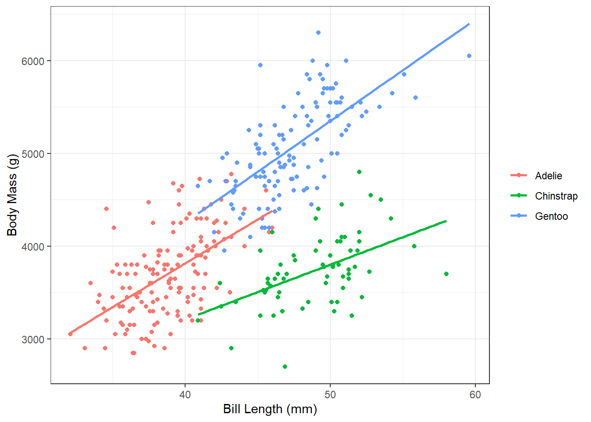
This kind of description can help you build expectations for designing studies. Knowing the distributions (ranges, medians, means) of variables relevant to your line of work can help you home in on plausible effect sizes and spot errors (including in others’ works).
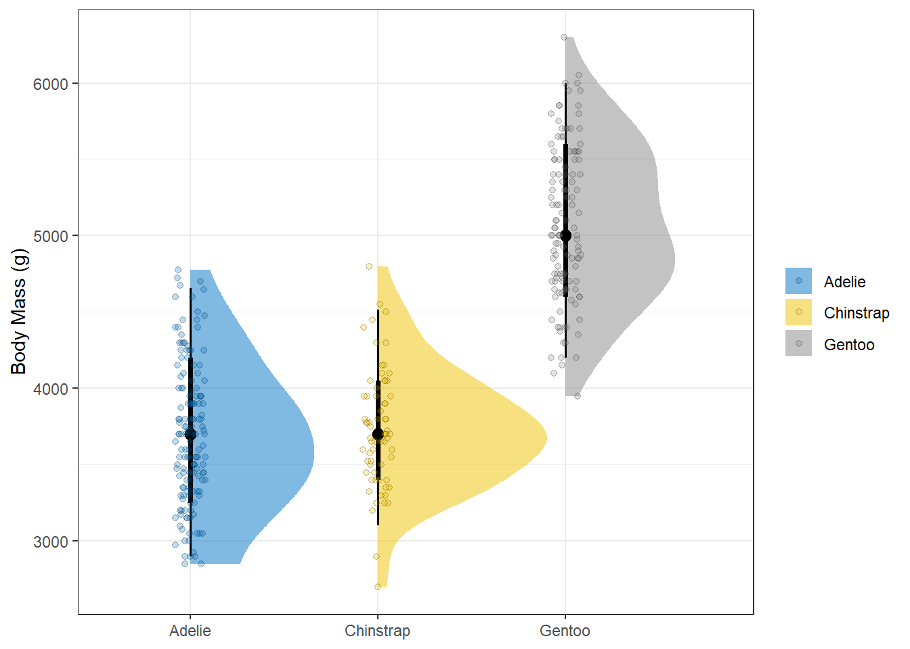
During the COVID-19 pandemic, many dashboards displayed cases by region which were helpful to local policymakers and the public alike to think about changing conditions.
The validity of our descriptive analyses are related to measurement and sampling errors.
measurement error
imprecision or inaccuracy (bias) in our quantification of a variable
sampling error
the difference between our collected data and its representation of the target that we’re asking a question about
We must also question whether our target population is represented in our sample (our data). The more different these are, the less our question can be answered with our data - conversely, the less applicable our data are to our question for valid descriptions. This is a key way to get an answer to the wrong question. Might the people who take time to respond to surveys have different characteristics from those who won’t respond to them?
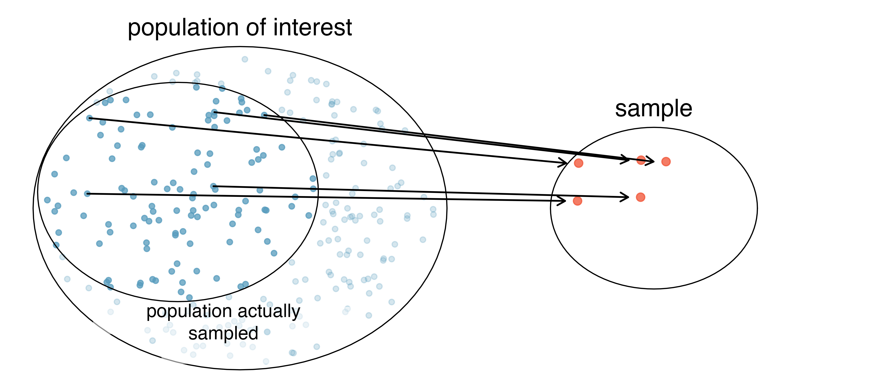
Descriptive analysis is about describing data and statistical relationships as they appear, not about providing evidence for mechanisms. Descriptive analysis “helps us understand the population we’re working with, the distribution of the outcomes, exposures (variables we think might be causal), and confounders (variables we need to account for to get unbiased causal effects for the exposure).” Causal Inference with R, Ch. 1. Descriptive analysis is the point you want to start all your data analyses.
Prediction
Prediction is about using data to make accurate guesses (predictions) about variables, often in unobserved situations (out of sample prediction) and into new times and spaces, what we often call forecasting. Good prediction models balance predictive accuracy with generalization to new samples.
What are examples of prediction-focused models?
The validity of prediction lies in predictive accuracy on a set of data that a model has not seen. Metrics such as root mean square error or AUC (for classification tasks) are often used here. But prediction metrics cannot determine causal structure.
The variables we use to predict the variable of interest often don’t matter, but they can. For instance, poorly measured variables (i.e., high measurement error) may decrease the efficacy of a variable for predicting another variable.
Causal Inference
Causal inference is for when we are interested in asking questions about the effect of one variable on another. “Does smoking cause cancer?” “How does soil depth influence nitrogen processing?” The goal of causal inference is to estimate the unbiased effect of an exposure (causal agent of interest) on an outcome (response variable of interest).
Making valid causal inferences requires several assumptions that are difficult or impossible to verify. The key to valid causal inference is defending against the influence of confounders. Confounders are variables that affect both your exposure and your outcome - they confound your ability to explain the outcome purely (unbiased) in terms of the exposure.
Here’s an example. Let’s say you’re interested in the effect of taking calculus in high school on college GPA. So you measure a sample of students’ success and whether they took calculus in high school. And you find a positive correlation. Is this correlation representative of an unbiased, causal effect?
What if taking calculus in high school is positively correlated with wealth and ability to get extra tutoring in college? What if taking calculus is positively correlated with desire to succeed in college, so taking calculus is a trait of people who are driven to do better at the next level? Maybe this results in a spurious correlation between high school calculus and college success.
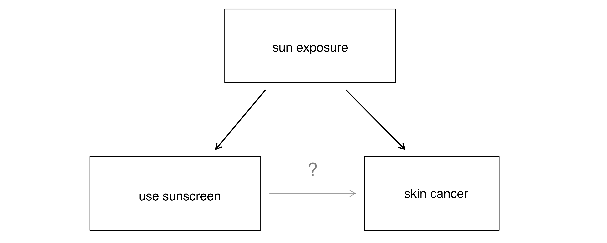
Why do randomized experiments work?
Modeling
Why do we build models?
Models are representations (simplifications) of the world and underlie all statistical analyses. They can be conceptual and qualitative, or explicitly quantitative. Statistical models fall in this latter category. They can also be simple or complex. The mean is a model of a set of data, representing it as a statistical moment - a very simple, descriptive but quantitative model. But in most modeling exercises we’re usually interested in relationships between variables to describe, predict, or explain.
Understanding of models comes from both of looking at their mathematical structure and toying with their behavior. This is how you can verify a model does what you think it does before you actually confront it with data to learn something about the data. And this is why you shouldn’t just throw models at your data - models are assumptions about a data generating process.
Take for example one of the most common models - the linear model. Assume for now that this does mean ‘a straight line’ relationship. Here’s our example of Ice Cream Calories and Air Temperature again. What is this line?
It’s a graphical representation of a linear model (method = “lm”) for the relationship between the two variables. And this relationship is represented as the best fitting line through the data. How about the mathematical structure of this model? You learned long ago that the equation for a line is y = mx + b, and that comes in handy now to describe this line of best fit. y is the response variable (Ice Cream Calories Consumed), x is the predictor variable (Air Temperature), b is the y intercept (the value of y when x = 0), and m is the slope, which is often what we’re interested in estimating in a lot of problems. We’ll show in the next lecture that this doesn’t have to actually be a slope in the conventional sense. More formally it’s the unit change in y with a unit change in x (equivalently: rise/run), or the first derivative of y with respect to x.
So how do we toy with models? We simulate data and relationships. The relationship between ice cream calories and air temperature is totally contrived. I wanted a dataframe with 50 observations of the Air Temperature variable and 50 observations of the Calories Consumed variable. Critically, I wanted Calories Consumed to be a function of Air Temperature. So I could have done this:
Statistical models are meant to represent both the relationship and the noise around that relationship, which we call error and is usually represented as eta (e.g., y = mx + b + eta). In this course, we’ll think a lot about normally distributed variables and errors. Recall we can simulate drawing from a normally distributed variable using rnorm().
tibble(variable =rnorm(50, mean =10, sd =3))|>ggplot(aes(variable))+geom_histogram()
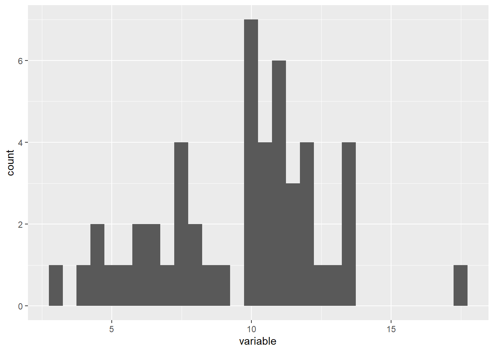
Now let’s say that we have a variable y that is deterministically a linear function of x, such that y = 2x (as x increases 1, y doubles). But let’s also say that we measure y along with x and this brings with it measurement errors. Our model needs to represent this stochasticity - we can represent the deterministic part of the model as the mean, and the stochastic part of the model as the standard deviation of a normal distribution.
tibble(x =seq(10,20, by =1),y =rnorm(length(x), mean =2*x, sd =3))|>ggplot()+geom_point(aes(x = x, y = y))
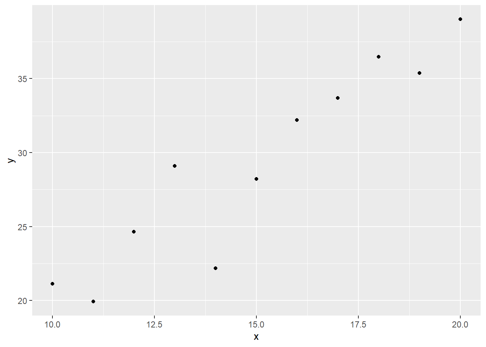
The data now don’t fall along a straight line, but we know the data generating process is a straight line. If we estimated this relationship with a linear model, it would try to figure out the slope and noise of the best fit line. Because we generated the data, we know what the model should approximately say for m and eta.
Code-along
What are the tools of simulating data generating processes? We can do this with a few R functions, as you could see in the lecture. Let’s go through a few R functions that will be helpful.
tibble() you’ve seen before, and it helps us turn vectors into dataframes that are easily visualized either as tables or via ggplot.
rep() repeats a vector of values multiple times.
You can take a single value and repeat it many times.
rep(1, times =6)
[1] 1 1 1 1 1 1
or a vector of values and repeat it. These are convenient for coming up with repeated categorical levels
rep(c("a", "b", "c"), times =3)
[1] "a" "b" "c" "a" "b" "c" "a" "b" "c"
seq() creates a vector (sequence) of values from one number to another by a specified increment
expand_grid() creates a dataframe from all combinations of the vectors/factors put into it. So for example let’s say you apply three treatments to groups in two blocks:
f <-tibble(Treatment =c("TrtA", "TrtB", "TrtC"))|>expand_grid(Block =c("Block1", "Block2", "Block3"))f
You would still need to make multiple measurements in each of these treatments nested within blocks. How could we create this dataframe to have five individuals within each of these Treatment/Block groups?
rnorm() you’ve also seen several times. It randomly samples n times from a normal distribution defined by a mean and a standard deviation. This means it can give us an idea of how random chance can influence the patterns we see (or don’t).
norm_dist1 <-tibble(normal =rnorm(n =10, mean =2, sd =2))emp_quantiles1<-quantile(norm_dist1$normal, c(0.159,0.5,0.841)) # Proportions of data theoretically below and above the standard deviation, and the median which should = the meannorm_dist2 <-tibble(normal =rnorm(n =1000, mean =2, sd =2))emp_quantiles2 <-quantile(norm_dist2$normal, c(0.159,0.5,0.841)) ggplot(norm_dist1,aes(x = normal))+geom_density()+theme_bw()+geom_vline(xintercept =4, color ="grey")+geom_vline(xintercept =0,color ="grey")+geom_vline(xintercept =2, color ="grey", linetype ="dashed")+geom_vline(xintercept = emp_quantiles1[[1]], color ="red")+geom_vline(xintercept = emp_quantiles1[[3]],color ="red")+geom_vline(xintercept = emp_quantiles1[[2]], color ="red", linetype ="dashed")+ggtitle("n = 10 random samples")
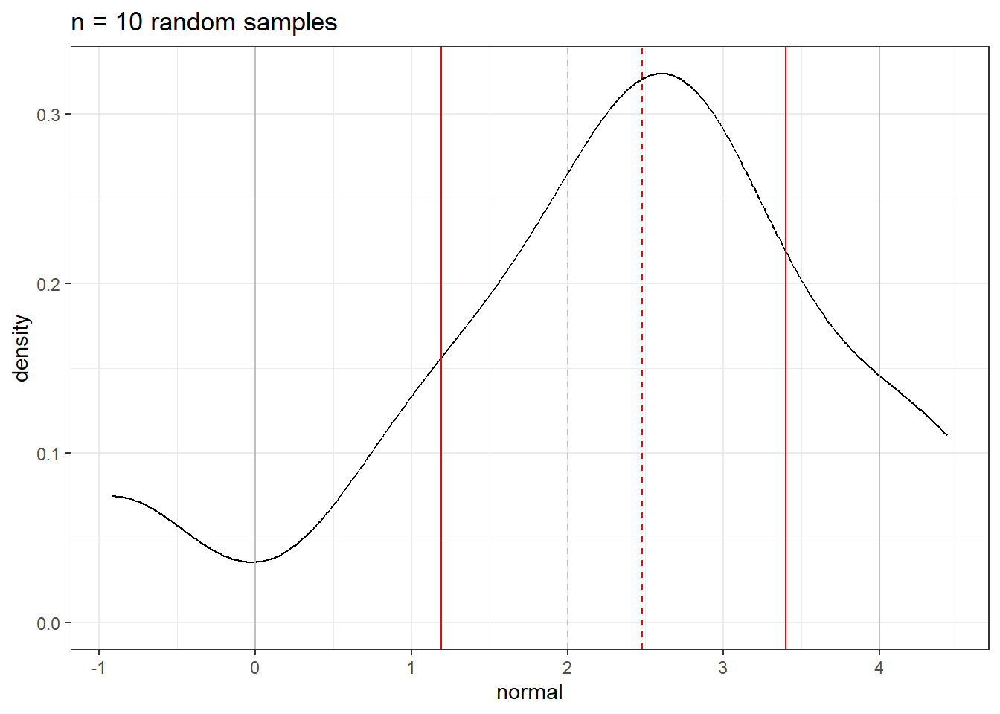
ggplot(norm_dist2,aes(x = normal))+geom_density()+theme_bw()+geom_vline(xintercept =4, color ="grey")+geom_vline(xintercept =0,color ="grey")+geom_vline(xintercept =2, color ="grey", linetype ="dashed")+geom_vline(xintercept = emp_quantiles2[[1]], color ="red")+geom_vline(xintercept = emp_quantiles2[[3]],color ="red")+geom_vline(xintercept = emp_quantiles2[[2]], color ="red", linetype ="dashed")+ggtitle("n = 1000 random samples")
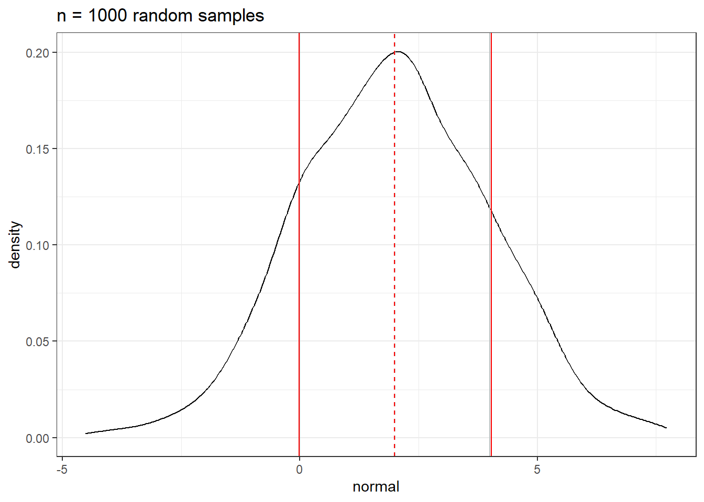
How we put this all together can help us simulate (emulate) any experiment, i.e., our data generating process, giving insight to our how models work and how violations of model structure which we often call assumptions may influence the interpretation and confidence in our work.
Let’s say we want to simulate an experiment where we have two treatments and one control. Treatment A grows bacteria on a macronutrient rich plate, while Treatment B grows bacteria on a macro + micronutrient rich plate. Based on previous work, we hypothesize that the growth of these bacteria are limited by micronutrients or colimited by micro and macro nutrients, so we predict that treatment B will have the highest bacterial counts at the end of the treatment (relative to control), treatment A will not respond relative to the control. Specifically, we believe that Treatment B will have double the counts as the control - assume we know a lot about these cultures and have a good sense of their mean and variability. We also choose to have 5 independent replicates exposed to each Treatment.
Is it reasonable to assume the standard deviation is the same in each treatment?
Should we have started with a process-based model of bacterial growth (logistic-ish?).
Summary: - Correlation doesn’t imply causation… but it’s more complicated than that. - Our goals define how we model, what we model, and how we interpret our models - Simulation is a tool that helps us understand our models and the sensitivity of their interpretations to our data. Renowned applied statistician Andrew Gelman calls this, in Regression and Other Stories, “Fake data simulation as a way of life”.
In the next lecture, we’ll put this specifically into a framework of linear models (e.g., regression, t-tests, etc.) to help us understand how they work.